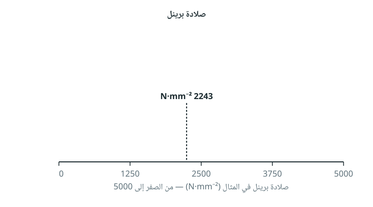

صلادة برينل
Brinell hardness
صلادة برينل مقياس لصلادة المعدن يُقاس بضغط كرة فولاذية صلدة في سطحه بحمل محدد وقياس قطر الأثر: HB = 2F/(π·D·(D−√(D²−d²))). تُستعمل في مراقبة المعالجة الحرارية وفي تقدير مقاومة الشد للمعادن.
يُضغط بكرة فولاذية قطرها D في سطح المعدن بحمل F لمدة محددة، فينشأ أثر دائري قطره d. ومساحة سطح الأثر كروية لا مستوية، فتُحسب من هندسة الكرة. وصلادة برينل هي الحمل مقسوماً على مساحة الأثر: HB = 2F/(π·D·(D−√(D²−d²))). مثال: حمل 29 420 N (3000 kgf) وكرة قطرها 10.0 mm أنتجت أثراً قطره 4.00 mm: √(100−16.0) = 9.165، وD−9.165 = 0.835 mm، فيكون HB = 2×29 420/(π×10.0×0.835) = 58 840/26.23 = 2243 N/mm²، أي نحو 229 بوحدة kgf/mm².
كيف تعمل الظاهرة؟
الكرة الصلدة تُحدث تشوهاً لدناً موضعياً في سطح المعدن. وتقاوم الطبقة السطحية هذا التشوه بقوى الشبكة البلورية وبكثافة الانخلاعات. فالمعدن الملدَّن فيه انخلاعات كثيرة متحركة فيتشوه بسهولة ويُنتج أثراً كبيراً، والمعدن المقسّى فيه انخلاعات مثبَّتة بذرّات مذابة أو بكربيدات فيقاوم فيُنتج أثراً صغيراً. ولهذا ترتبط صلادة برينل بمقاومة الشد ارتباطاً تجريبياً قوياً في الفولاذ.
العلاقة بالأرقام
HB = 2F/(π·D·(D−√(D²−d²))). مثال: F = 29 420 N، D = 10.0 mm، d = 4.00 mm → √(100−16.0) = 9.165، D−9.165 = 0.835، HB = 58 840/(π×10.0×0.835) = 2243 N/mm². وبالوحدات التقليدية F = 3000 kgf → HB = 229 kgf/mm²، والعلاقة بين الوحدتين 1 kgf = 9.806 65 N.
مفاهيم متقاربة
يُفرَّق بين برينل وفيكرز: برينل كرة ومساحة أثر كروية، وفيكرز هرم ومساحة أثر مستوية، والثاني أدق في الصلادات العالية. ويُفرَّق بين برينل وروكويل: روكويل يقيس العمق مباشرة ويُقرأ على قرص، وبرينل يقيس القطر ويحتاج حساباً. ويُفرَّد بين الصلادة السطحية والصلادة الحجمية: الأولى تُقاس بحمل خفيف على طبقة رقيقة. وأخيراً يُفرَّق بين الصلادة والمقاومة للتآكل: الثانية تعتمد على التصلد بالانفعال وعلى التصلد بالترسيب معاً.
حدود التطبيق
لا تصلح برينل للفولاذ المقسّى جداً، لأن الكرة نفسها تتشوه فتكون القراءة خاطئة. ولا تصلح للطبقات الرقيقة أو المنتجات الصغيرة، لأن الأثر يخترق الطبقة كلها. ولا تصلح للمواد الهشة كالسيراميك، حيث يتشقق السطح بدل أن يتشوه لدناً. ولا تُقارن قراءات بحمل أو كرة مختلفة دون تصحيح، لأن HB يعتمد على نسبة الحمل إلى مربع القطر.

| الكمية | القيمة | المصدر |
|---|---|---|
| صلادة برينل في المثال | 2243 N·mm⁻² | [1] |
| مقاومة الشد التقديرية لفولاذ HB=200 | 690 MPa | [1] |
المصادر
- 1 CODATA Value: molar gas constant — NIST — CODATA 2022 recommended values (2024). physics.nist.gov/cgi-bin/cuu/Value?r · اطُّلع عليه 2026-11-22
- 2 The International System of Units (SI), 9th edition (2019) — BIPM — Bureau International des Poids et Mesures (2019). www.bipm.org/en/publications/si-brochure · اطُّلع عليه 2026-11-22
- 3 The International System of Units (SI), 9th edition (2019) — BIPM — Bureau International des Poids et Mesures (2019). www.bipm.org/en/publications/si-brochure · اطُّلع عليه 2026-11-22
استشهد بهذا المصطلح
الصيغتان مبنيتان من بيانات الصفحة نفسها: العنوان والتاريخ ورابط النسخة المنشورة.
صلادة برينل — Brinell hardness. (2026). ديوان المعرفة — انفراد. https://infiradev.com/diwan/terms/term-hardness-brinell.html
@misc{term-hardness-brinell2026,
title = {صلادة برينل},
titleaddon = {Brinell hardness},
howpublished = {{ديوان المعرفة — انفراد} — مرجع علمي عربي},
year = {2026},
url = {https://infiradev.com/diwan/terms/term-hardness-brinell.html},
urldate = {2026-11-26},
note = {مراجعة علمية: hermes (مراجعة معتمدة 2026-11-26)}
}
راجعه: hermes (مراجعة معتمدة 2026-11-26) · 2026-11-26 · آخر تحديث 2026-11-22